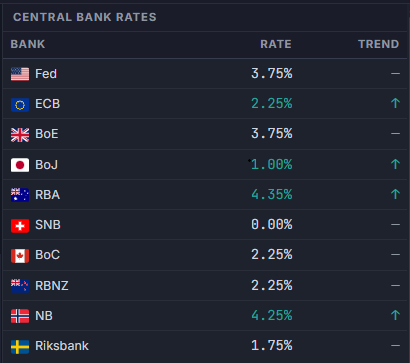
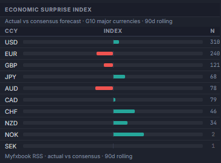
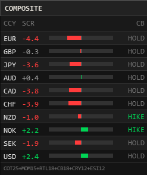

Fundamental Analysis in Forex
Fundamental analysis in forex forecasts currency direction from the economic and policy conditions behind it, rather than from price history. Institutional macro desks build a fundamental view from four inputs read together — central bank rate bias, institutional positioning, economic data surprises, and the prevailing cross-asset risk regime — instead of relying on any single one in isolation.
What Is Fundamental Analysis in Forex
Fundamental analysis asks a specific question: given the economic, monetary policy, and positioning conditions of two economies, which currency should capital flow toward next? It is forward-looking by nature — a currency's exchange rate already reflects everything the market currently knows, so what moves it further is new information that changes the expected path of that economy relative to another.
The dominant driver over medium-term horizons is the interest-rate differential between two currencies, and more specifically the market's expectation of where that differential is heading, not just where it sits today. A central bank that is expected to raise rates faster than another tends to see its currency strengthen, because capital seeks the higher forward-looking, risk-adjusted return. Growth, inflation, employment, and trade data all matter primarily because they feed into that rate-path expectation.
| Input | Typical horizon | What it captures |
|---|---|---|
| Central bank rate bias | Weeks to months | Policy divergence between two currencies and what is already priced for the next meeting |
| Institutional positioning | Weeks | How leveraged funds are already positioned — confirmation or crowding risk |
| Economic data surprises | Days to weeks | Whether incoming data is beating or missing what was already expected |
| Cross-asset risk regime | Days to weeks | Whether carry trades are being rewarded (risk-on) or unwound (risk-off) |
Fundamental vs. Technical Analysis
Fundamental and technical analysis are frequently framed as competing methods, but institutional desks tend to use them sequentially rather than as alternatives. Fundamental analysis identifies which currency pair and direction carries an edge; technical analysis is then used to decide when to act on that view.
| Fundamental analysis | Technical analysis | |
|---|---|---|
| Primary input | Rate bias, positioning, data surprises, risk regime | Historical price, chart patterns, indicators |
| Question answered | Which direction has an edge, and why | When to enter or exit within that view |
| Typical horizon | Medium-term (weeks to months) | Short-term (intraday to days) |
| Failure mode | Correct direction, poor timing | Good timing, no underlying edge |
The Four Building Blocks
Institutional macro desks structure fundamental analysis around four inputs, evaluated together rather than individually. Each answers a different question, and a currency view built from two or more aligning carries materially more weight than any single input in isolation.
- Central bank rate bias — what monetary policy divergence between two currencies implies, and what is already priced in by rate markets ahead of the next meeting.
- Institutional positioning — how leveraged funds are already positioned in a currency, which tells you whether a move is early or already crowded.
- Economic data surprises — whether recent releases are beating or missing consensus forecasts, not just their absolute level.
- Cross-asset risk regime — whether the broader market is in a risk-on or risk-off posture, which governs carry trade flows and funding-currency demand.
Central Bank Policy & Rate Bias
Central bank rate bias is the single most influential fundamental input for medium-term FX direction. What matters is not the current policy rate in isolation, but the expected direction of travel — whether the market is pricing hikes, cuts, or a hold — and how that expectation compares between the two currencies in a pair.
Rate expectations are typically read from OIS-implied pricing rather than from central bank statements alone, since OIS pricing reflects what the market has already priced in ahead of the next scheduled meeting. A currency whose central bank is expected to hike while its counterpart is expected to cut has a clear fundamental tailwind, all else equal — the divergence itself is the signal, not either rate path in isolation.


Institutional Positioning
A fundamental view on direction is incomplete without knowing how institutional players are already positioned. The CFTC Commitments of Traders (COT) report — published weekly for currency futures — breaks down positioning by leveraged funds, providing a proxy for how the institutional community is already leaning on a given currency.
Positioning data answers a question that rate bias and data surprises cannot: is this move early, with room to extend as more participants join, or is it already crowded, with the risk skewed toward a reversal as positioning unwinds? A currency with strongly bullish fundamentals but already stretched net-long positioning carries different risk than the same fundamentals with positioning still near neutral.

A full breakdown of how to read COT reports — net positioning, historical percentile ranking, and long/short participant detail — is covered in the COT / CFTC Positioning guide.
Economic Data & Surprises
A common beginner mistake is reading economic data in absolute terms. A strong GDP or CPI print is only fundamentally meaningful in the context of what the market already expected. If consensus forecast a stronger number than what was delivered, an objectively solid release can still be a fundamental negative surprise — and can weaken the currency even though the headline figure looks healthy.
Institutional desks track this using a surprise index — a rolling, decay-weighted score of whether a currency's recent data has been beating or missing consensus forecasts — rather than treating each release as an isolated data point.

The full methodology — decay weighting, z-score normalization, and how to read a divergence between two currencies' surprise indices — is covered in the Economic Surprise Index guide.
Cross-Asset Risk Regime
Currency direction does not happen in isolation from the rest of the market. In a risk-on regime — rising equities, compressed volatility, tight credit spreads — capital tends to flow toward higher-yielding currencies and away from traditional funding currencies, rewarding carry trades. In a risk-off regime, that flow reverses: funding currencies strengthen as carry positions are unwound and capital seeks safety.
This is why a fundamentally sound rate-differential view can still underperform if the broader risk regime turns against it — a hawkish central bank does not protect a currency from a broad risk-off shock that drives capital toward safe havens regardless of that currency's own rate path.

The full regime classification methodology is covered in the Cross-Asset Risk Monitor guide.
Reading the Signals Together
No single input above is reliable in isolation. Rate bias can shift on a single dovish comment; positioning can remain crowded for longer than seems rational; a single data surprise can be noise rather than signal; a risk regime can reverse within a session. The institutional approach is to weight a view by how many of the four pillars agree.
| Signal combination | Example | Read |
|---|---|---|
| All four aligned | Hawkish rate bias, positioning still building, positive surprise index, risk-on regime | High conviction — every pillar supports the same direction |
| Rate bias vs. positioning conflict | Hawkish rate bias, but positioning already at a stretched net-long extreme | Caution — fundamentals supportive, but crowding raises reversal risk |
| Data surprise vs. risk regime conflict | Improving surprise index, but a risk-off shock is driving flows regardless | Regime dominates — broad risk-off can override a single currency's own data |
| All four negative | Dovish bias, crowded net-short, negative surprises, risk-off unwind | High conviction — every pillar supports weakness |
The EA's Composite Score
The MT5 Expert Advisor packages this same cross-checking process into a single number, rather than requiring a manual review of each pillar in turn. Its Composite Score panel blends CB bias, COT positioning, carry, and the Economic Surprise Index — all four pillars covered above — together with two additional factors not discussed in this guide, price momentum and retail sentiment, into one per-currency reading on a ±10 scale.

It is a convenience layer over the same underlying panels, not a replacement for understanding why each pillar moved — a high-conviction score is only as reliable as the pillars driving it. The full six-factor weighting, including how the NOK/SEK weight is redistributed in the absence of liquid CFTC futures, is covered in the Composite Score section of the MT5 EA guide.
Common Mistakes
- Reading data in absolute terms. A strong release that misses an even stronger consensus forecast is a fundamental negative, not a positive — the surprise relative to expectations is what moves price, not the headline number alone.
- Ignoring what is already priced in. A widely expected rate hike that arrives as expected often causes little to no FX reaction, since the move was already reflected in the exchange rate beforehand. The reaction comes from the surprise relative to what was priced, not the decision itself.
- Treating a fundamental view as an entry-timing signal. Fundamental analysis identifies medium-term direction; it does not tell you that today is the optimal entry price. Combining it with technical or execution-level timing is standard practice, not optional.
- Relying on a single input. A hawkish central bank alone, without checking positioning or the risk regime, can lead to entering a fundamentally sound view at a structurally poor time — for example, into an already crowded, extended position.
- Ignoring positioning and crowding. The strongest fundamental case can still underperform if positioning is already stretched in that direction, since a large share of the expected move may already be reflected in price.
Limitations
Fundamental analysis is a framework for medium-term directional bias, not a precise timing or execution tool. Several limitations are worth keeping in mind:
- Timing uncertainty. A sound fundamental view can take weeks to play out, or can be delayed indefinitely by an unrelated risk event. It provides direction, not a schedule.
- Data revisions. Economic releases are periodically revised after publication, which can shift a surprise index retroactively. Recent, unrevised data should be weighted with that in mind.
- Regime shocks override slower-moving inputs. A sudden risk-off event can dominate price action regardless of how supportive rate bias or data surprises were beforehand.
- It does not replace risk management. A high-conviction fundamental view is still a probabilistic view, not a certainty, and should be sized and risk-managed accordingly.
For these reasons, fundamental analysis is most effective as one input into a broader framework — cross-checked against positioning, the current risk regime, and, for trade timing, technical analysis — rather than used as a standalone signal.
How the Terminal Implements This Framework
The Global Investing FX Terminal was built around this exact four-pillar structure, so the inputs used in institutional fundamental analysis are available on one dashboard rather than requiring separate manual research for each:
- CB Rates & Bias panel — current policy rate, trend, and OIS-implied bias for all ten G10 central banks.
- COT Positioning panel — weekly CFTC Leveraged Funds net positioning by currency.
- Economic Surprise Index — decay-weighted beat/miss scoring across all G10 currencies.
- Cross-Asset Risk Monitor — current risk-on/risk-off regime classification and its implication for carry.
- AI Market Narrative — a synthesis of the four panels above, refreshed at each major session transition, so the current read is stated in plain language rather than requiring the reader to cross-reference every panel manually.
The same data is available in the browser-based web terminal and natively inside MetaTrader 5 through the companion Expert Advisor — see the MetaTrader 5 EA guide for the native MT5 panel layout.
CB rate bias, COT positioning, economic surprises, and the cross-asset risk regime for all G10 currencies are available on the web terminal and natively inside MetaTrader 5 through the companion Expert Advisor — both unlock under a single EA rental on MQL5 Market.